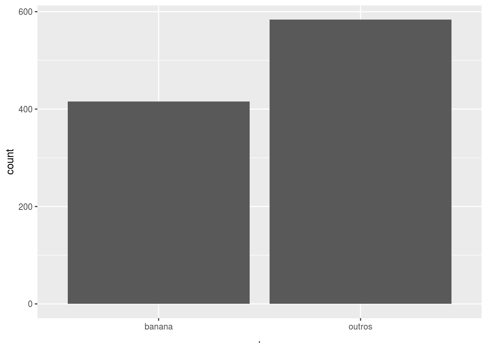

4 Trabalhando com vetores especiais
4.1 Pacote lubridate para trabalhar com datas
library(magrittr)
library(lubridate)Originalmente, o R é bastante ruim para trabalhar com datas, o que causa frustração e perda de tempo nas análises. O pacote lubridate foi criado para simplificar ao máximo a leitura de datas e extração de informações dessas datas.
A função mais importante para leitura de dados no lubridate é a ymd. Essa função serve para ler qualquer data de uma string no formato YYYY-MM-DD. Essa função é útil pois funciona com qualquer separador entre os elementos da data e também porque temos uma função para cada formato (mdy, dmy, dym, myd, ydm).
Exemplo: dia-ano-mês
d1 <- '04/15/06'
dym(d1)## [1] "2015-06-04"Exemplo: ano-mês-dia
d2 <- '2015-01-02'
ymd(d2)## [1] "2015-01-02"Outras funções importantes
ymd_hms: lê datas e horários, generalizandoymd. Exemplo:
d3 <- '07022016 10:11:47'
mdy_hms(d3)## [1] "2016-07-02 10:11:47 UTC"Observe que as classes são diferentes:
list(ymd(d2), mdy_hms(d3)) %>% lapply(class)## [[1]]
## [1] "Date"
##
## [[2]]
## [1] "POSIXct" "POSIXt"year,month,day,quarter,weekday,week: extraem componentes da data.years,months,days: adicionam tempos a uma data, ajudando a criar vetores de datas. Por exemplo
ymd('2015-01-01') + months(0:11)## [1] "2015-01-01" "2015-02-01" "2015-03-01" "2015-04-01" "2015-05-01"
## [6] "2015-06-01" "2015-07-01" "2015-08-01" "2015-09-01" "2015-10-01"
## [11] "2015-11-01" "2015-12-01"floor_dateeceiling_date: arredonda datas para uma unidade de interesse. Útil para agregar dados diários por semana, mês, trimestre etc.
Mais informações: ver aqui e aqui.
4.1.1 Exercício
(…)
4.2 Pacote stringr para trabalhar com textos
O R básico não tem uma sintaxe consistente para trabalhar com textos. O pacote stringr ajuda a realizar todas as tarefas básicas de manipulação de texto, exigindo que o usuário estude apenas uma sintaxe. O stringr também é construído sobre a biblioteca ICU, implementada em C e C++, apresentando resultados rápidos e confiáveis.
As regras básicas do pacote são:
- As funções de manipulação de texto começam com
str_. Caso esqueça o nome de uma função, basta digitarstringr::str_e apertarTABpara ver quais são as opções. - O primeiro argumento da função é sempre uma
string.
Antes de listar as funções, precisamos estudar o básico de expressões regulares.
4.2.1 Expressões regulares
Expressão regular ou regex é uma sequência concisa de caracteres que representa várias strings. Entender o básico de expressões regulares é indispensável para trabalhar com textos.
Vamos estudar expressões regulares através de exemplos e com a função str_detect(). Essa função retorna TRUE se uma string atende à uma expressão regular e FALSE em caso contrário.
A tabela abaixo mostra a aplicação de seis regex a seis strings distintas.
library(stringr)
testes <- c('ban', 'banana', 'abandonado', 'pranab anderson', 'BANANA', 'ele levou ban')
expressoes <- list(
'ban', # reconhece tudo que tenha "ban", mas não ignora case
'BAN', # reconhece tudo que tenha "BAN", mas não ignora case
regex('ban', ignore_case = TRUE), # reconhece tudo que tenha "ban", ignorando case
'ban$', # reconhece apenas o que termina exatamente em "ban"
'^ban', # reconhece apenas o que começa exatamente com "ban"
'b ?an' # reconhece tudo que tenha "ban", com ou sem espaço entre o "b" e o "a"
)| regex | ban | banana | abandonado | pranab anderson | BANANA | ele levou ban |
|---|---|---|---|---|---|---|
| ban | TRUE | TRUE | TRUE | FALSE | FALSE | TRUE |
| BAN | FALSE | TRUE | FALSE | FALSE | FALSE | FALSE |
| ban | FALSE | FALSE | TRUE | FALSE | FALSE | FALSE |
| ban$ | FALSE | FALSE | FALSE | TRUE | FALSE | FALSE |
| ^ban | FALSE | FALSE | FALSE | FALSE | TRUE | FALSE |
| b ?an | FALSE | FALSE | FALSE | FALSE | FALSE | TRUE |
4.2.1.1 Quantificadores
Os caracteres +, * e {x,y} indicam quantas vezes um padrão se repete:
ey+significaee depoisy“uma vez ou mais”. Por exemplo, reconhecehey,heyy,a eyyy, mas não reconhecee,ynemyy.ey*significa “zero vezes ou mais”. Por exemplo, reconhecehey,heyy,a eyyyee, mas não reconheceynemyy.ey{3}significa “exatamente três vezes”. Por exemplo, reconheceeyyyeeyyyy, mas não reconheceeyy.ey{1,3}significa “entre uma e três vezes”.
Para aplicar um quantificador a um conjunto de caracteres, use parênteses. Por exemplo, (ey )+ reconhece ey ey.
4.2.1.2 Conjuntos
Colocando caracteres dentro de [], reconhecemos quaisquer caracteres desse conjunto. Alguns exemplos práticos:
[Cc]asapara reconhecer “casa” em maiúsculo ou minúsculo.[0-9]para reconhecer somente números. O mesmo vale para letras[a-z],[A-Z],[a-zA-Z]etc.- O símbolo
^dentro do colchete significa negação. Por exemplo,[^0-9]significa pegar tudo o que não é número. - O símbolo
.fora do colchete indica “qualquer caractere”, mas dentro do colchete é apenas ponto. - Use
[[:space:]]+para reconhecer espaços e[[:punct:]]+para reconhecer pontuações.
4.2.1.3 Miscelânea
- Use
abjutils::rm_accent()para retirar os acentos de um texto. - Use
|para opções, por exemplodesfavor|desprovreconhece tanto “desfavorável” quanto “desprovido” \npula linha,\fé final da página,\té tab. Use\para transformar caracteres especiais em literais.tolower()etoupper()para mudar o case de uma string.
A lista de possibilidades com expressões regulares é extensa. Um bom lugar para testar o funcionamento de expressões regulares é o regex101.
4.2.2 Funções do stringr
str_detect()retornaTRUEse a regex é compatível com a string eFALSEcaso contráriostr_lengh()retorna o comprimento de uma string.
str_length('hye')## [1] 3str_trim()retira espaços e quebras de linha/tabs no início ou final de string.
string <- '\nessa string é muito suja \n'
str_trim(string)## [1] "essa string é muito suja"str_replace()estr_replace_all()substituem um padrão (ou todos) encontrado para um outro padrão
string <- 'heyyy ui yy'
str_replace(string, 'y', 'x')## [1] "hexyy ui yy"str_replace(string, 'y+', 'x')## [1] "hex ui yy"str_replace_all(string, 'y', 'x')## [1] "hexxx ui xx"str_replace_all('string com muitos espaços', ' +', ' ') # tirar espaços extras## [1] "string com muitos espaços"str_match()estr_match_all()extrai pedaços da string identificados pela regex. Caso queira extrair somente a parte identificada, use parênteses.
frases <- c('a roupa do rei', 'de roma', 'o rato roeu')
str_match(frases, 'roe')## [,1]
## [1,] NA
## [2,] NA
## [3,] "roe"str_match_all(frases, 'ro')## [[1]]
## [,1]
## [1,] "ro"
##
## [[2]]
## [,1]
## [1,] "ro"
##
## [[3]]
## [,1]
## [1,] "ro"str_match(frases, 'o (ro)')## [,1] [,2]
## [1,] NA NA
## [2,] NA NA
## [3,] "o ro" "ro"str_split()separa uma string em várias de acordo com um separador.
string <- 'eu sei, usar virgulas, de forma, perfeita'
str_split(string, ', ')## [[1]]
## [1] "eu sei" "usar virgulas" "de forma" "perfeita"str_split(string, ', ', simplify = TRUE)## [,1] [,2] [,3] [,4]
## [1,] "eu sei" "usar virgulas" "de forma" "perfeita"str_split_fixed()faz o mesmo questr_split(), mas separa apenasnvezes
str_split_fixed(string, ', ', 3)## [,1] [,2] [,3]
## [1,] "eu sei" "usar virgulas" "de forma, perfeita"str_split_fixed(string, ', ', 4) # igual a str_split(string, simplify = TRUE)## [,1] [,2] [,3] [,4]
## [1,] "eu sei" "usar virgulas" "de forma" "perfeita"str_sub()extrai uma parte da string de acordo com os índices.
string <- 'quero pegar só uma parte disso'
str_sub(string, 13, 14)## [1] "só"str_sub(string, -5, -1) # usar números negativos para voltar do final da string## [1] "disso"indices <- str_locate(string, 'parte')
indices## start end
## [1,] 20 24str_sub(string, indices) # pode ser útil usar com str_locate.## [1] "parte"str_subset()retorna somente as strings compatíveis com a regex.
frases <- c('a roupa do rei', 'de roma', 'o rato roeu')
str_subset(frases, 'd[eo]')## [1] "a roupa do rei" "de roma"4.2.3 Exemplo
4.2.4 Exercícios
- Considere o seguinte texto
txt <- "A função mais importante para leitura de dados no `lubridate` é a `ymd`. Essa função serve para ler qualquer data de uma `string` no formato `YYYY-MM-DD`. Essa função é útil pois funciona com qualquer separador entre os elementos da data e também porque temos uma função para cada formato (`mdy`, `dmy`, `dym`, `myd`, `ydm`)."Extraia todas as combinações da função ymd, sem repetições.
- Considere os textos abaixo
txts <- c(
'o produto é muito bom',
'o produto não é bom',
'o produto não é muito bom',
'o produto não é ruim',
'o produto não é não bom'
)Crie uma regra para identificar se o texto refere-se a um feedback positivo ou negativo sobre o produto (considera não bom = ruim e vice-versa). Retorne um vetor lógico que vale TRUE se o feedback é positivo e FALSE caso contrário.
4.3 Pacote forcats para trabalhar com factors
Factors sempre foram uma pedra no sapato para usuários de R. Esses objetos são estranhos pois parecem textos, mas na verdade são inteiros.
x <- factor(c('a', 'b', 'c'))
x## [1] a b c
## Levels: a b ctypeof(x)## [1] "integer"Assim, eles podem levar a erros do tipo:
x <- factor(c('6', '5', '4'))
as.numeric(x)## [1] 3 2 1O problema é que, historicamente, esses objetos eram utilizados por diversos objetos do R. Em particular, o data.frame até hoje utiliza fatores como padrão. Felizmente, o tidyverse nos livra desse mal e permite que utilizemos fatores somente quando eles são realmente úteis.
Mas quando fatores são úteis? A resposta para essa pergunta vem da própria estatística: temos dois tipos de variáveis categóricas existentes, a nominal e a ordinal. Uma variável nominal pode ser completamente representada por um vetor de strings. Mas isso não vale para variáveis ordinais, pois um vetor de strings só pode ser ordenado alfabeticamente, o que em muitos casos não é suficiente. O factor permite que associemos um inteiro para cada valor de uma string, nos dando a possibilidade de ordená-las da forma que quisermos.
O pacote forcats (for - para, cats - categóricas, não gatos) serve justamente para reordenar fatores de diversas formas. Isso é especialmente útil para visualização, pois muitas vezes queremos ordenar coisas de acordo com alguma regra.
Por exemplo, considere o seguinte gráfico de barras (veremos sobre o ggplot na próxima vez).
set.seed(123)
labs <- c('banana', 'maçã', 'laranja', 'limão', 'pêssego')[rbinom(1000, 4, .2) + 1]
labs %>% ggplot2::qplot()Note que o eixo x está ordenado alfabeticamente. Como a ordem das frutas não importa (pois é uma variável nominal), faz mais sentido ordenarmos as barras de acordo com a quantidade de frutas. Isso é feito com a função fct_infreq:
library(forcats)
labs %>% fct_infreq() %>% ggplot2::qplot()Outra importante função do forcats possibilita agrupar fatores de forma eficiente:
labs %>%
fct_collapse(cítrica = c('laranja', 'limão')) %>%
fct_infreq() %>%
ggplot2::qplot()Outra forma comum de agrupar fatores é agrupar em “outros” as categorias que aparecem poucas vezes na base de dados. Para isso, utilizamos fct_lump:
labs %>% fct_count()## # A tibble: 5 × 2
## f n
## <fctr> <int>
## 1 banana 416
## 2 laranja 145
## 3 limão 25
## 4 maçã 413
## 5 pêssego 1# agrupa todas desde que "outro" continue a menor categoria
labs %>% fct_lump(other_level = 'outros') %>% ggplot2::qplot()
# 10% menores
labs %>% fct_lump(prop = .10, other_level = 'outros') %>% ggplot2::qplot()
# mantém os n maiores
labs %>% fct_lump(n = 1, other_level = 'outros') %>% ggplot2::qplot()
Finalmente, uma função útil para produção de gráficos é a fct_reorder, que permite utilizar uma variável auxiliar (possivelmente fazendo sumarizações) para ordenar o fator.
4.3.1 Exercício
A função fct_reorder foi utilizada na análise dos inscritos. Descubra como ela foi utilizada e qual seu efeito no gráfico.